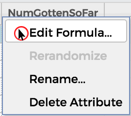
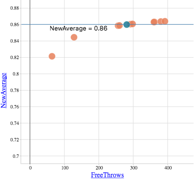

Here is a problem from an eighth grade algebra book, meant to be solved using the "guess and check" method:
Melissa's free throw average is 0.875. If she were to be given 20 more free throws and get 13 of them in the basket, her new free throw rate would be 0.860. How many free throw opportunities has she had thus far?
The first attribute, FreeThrows, can be edited in order to make guesses. The rightmost attribute, NewAverage, gives Melissa's new free throw average.
Study the formulas for each attribute. You can see and open the Formula Editor by clicking on the attribute and selecting "Edit Formula." This opens up the Formula Editor.
In NumGottenSoFar, the number of free throws is 0.875 times FreeThrows. This is the number of freethrows Melissa got so far.
The problem says that Melissa would have been given 20 more freethrows. This is NewFreeThrows, which has the equation NumGottenSoFar+20. The shots that Melissa gets is NewFreeThrows+13, which is NewNumGotten. Melissa's new average is NewNumGotten/NewFreeThrows. Study the formulas to see how guess and check works in CODAP.
The movable line helps us see where the FreeThrows are and to identify a point that lies at NewAverage = 0.86. You can slide the line up and down to see different values at horizontal points. You can also hover over the points to see the value of New Averages for each FreeThrow.
